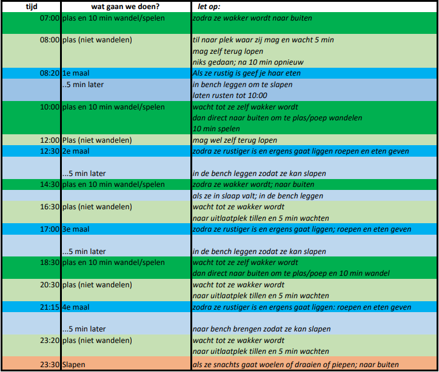

Wanneer doet een pup slapen, eten en ontlasten?
Slaapschema is eigenlijk niet het juiste woord... maar poep/plas/eet/slaap-schema klinkt zo raar. Iedere hond is natuurlijk anders. Het onderstaande schema heb ik een beetje aangepast naar aanleiding van wat onderzoek op verschillende sites. Pin me er niet op vast. Vraag info aan de fokker, dierenarts, op je hondenschool of een andere expert. Maar dit is hoe ik het met Yindee heb gedaan, of geprobeerd te doen. 
Hier wat handige websites over schema's, zindelijkheid, voeding en slapen: